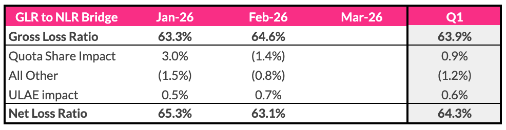
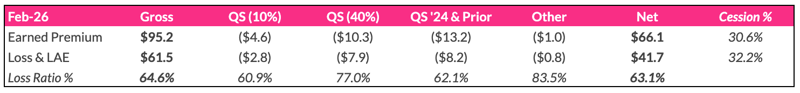

Matt_Hills_ProjectAlpha
Automated Gross-to-Net Loss Ratio reporting using a direct Python → Google Sheets pipeline.
Problem
- Manual monthly reporting (~4 hours)
- Repetitive data processing and formatting
- Outputs recreated across Excel and Google Sheets
Results
- One-command execution (
python3 main.py)
- Direct update to Google Sheets
- Standardized and consistent outputs
Solution
Excel Inputs
Python Processing
Direct Sheet Update
- Generates Walk + QS Mix
- Writes directly to Google Sheets
- Uses structured payload for updates
Tools
- Python (pandas, numpy)
- Google Sheets integration
- Excel
Demo

Gross to Net Bridge

QS Mix Exhibit
ROI
- Build: ~3–4 hours
- Saves: 4 hours/month
- Break-even: 1 cycle
Key Learnings
- Direct integration simplifies pipelines
- Modular design improves scalability
- Automation is most valuable when embedded in user tools